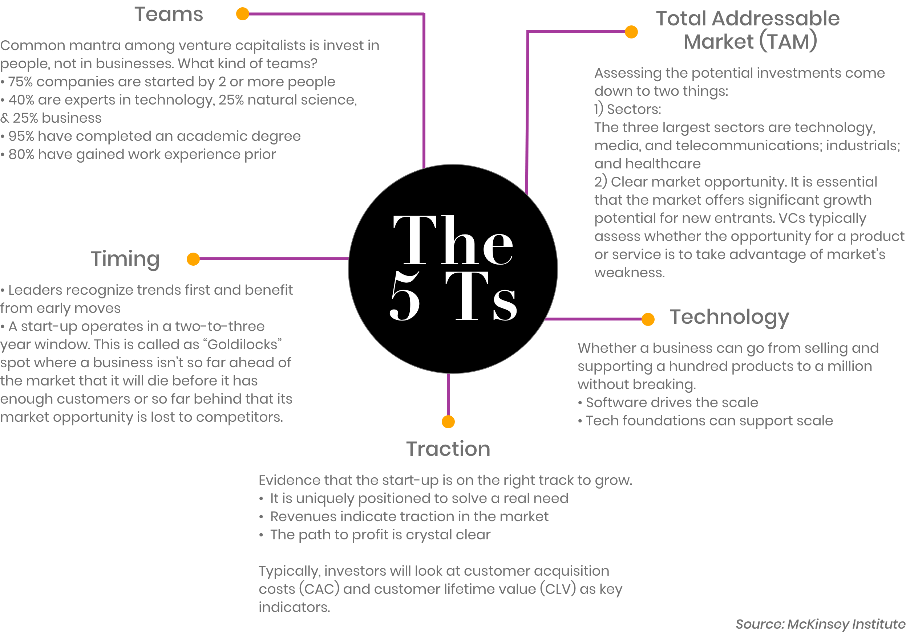
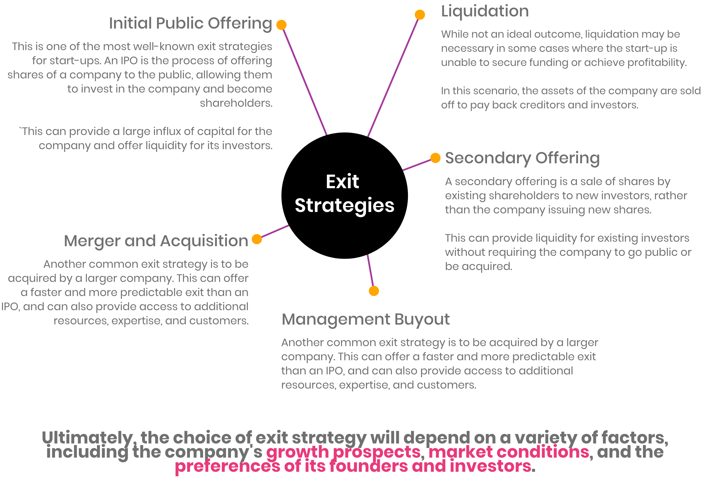

What is considered as an Unicorn start-up?
The term "unicorn" was coined in 2013 by venture capitalist Aileen Lee in a TechCrunch article titled
"Welcome To The Unicorn Club: Learning From Billion-Dollar Startups." In the article, Lee observed that start-ups with valuations of $1 billion or more were rare, with only 39 companies meeting that threshold at the time. Lee chose the term "unicorn" to describe these companies because, like the mythical creature, they were elusive and difficult to find. The term quickly gained popularity and has since become a widely recognized way of describing highly valued start-ups.
Before we go any further about who are the unicorns, let's visualize on how big is a $1 billion dollars:
It is massive and a billion dollar is a lot! Now, let's take a look at the number of unicorn start-ups in the world.
How many start-ups are still in the unicorn phase since it first join the club?
According to
CBInsights the number of new unicorns takes a nosedive because of 2021's unicorn stampede, unstable macro conditions, venture market tightens, and exits cool off.
What are the unicorns and how much are each of them are valued at?
Hover at each circle to find out their names and valuations.
Is there any of the companies that is a surprise to you? For me, there are Cava Group and A24.
What are the industry that these unicorns are concentrated on?
How about the locations? Which cities have the most of these mythical start-ups?
You guessed it right! Most of these unicorns are based in San Francisco (Silicon Valley), followed by other cities like Beijing, New York, Shanghai, London and Bengaluru.
How investors spot on a start-up that could be potentially be an unicorn?
There are five key questions that venture capitalists ask as they evaluate prospective investments, and these are the 5 Ts:

Let's shift the focus to the deca- and hectocorns. What are the start-ups, their valuations and the industry they are in?
The concept of unicorns has also expanded beyond just start-ups with $1 billion valuations. In recent years, companies with valuations of $10 billion or more have been referred to as "decacorns," and those with valuations of $100 billion or more have been dubbed "hectocorns." This terms are relatively new and it is a very rare feat for a company to reach this level of valuation, with only a handful of companies currently holding the title of hectocorn.
Who are the investors to the deca- and hectocorns of the world?
Now that we have identified these companies and their industries, the alluvial chart will show us who are the investment groups that funded these companies. The purpose of the chart is to show network of investments groups and their multiple unicorn start-ups. On average, each company has three main investors funding the business.
Surprisingly, OpenAI, who has been in everyone's mind for its breakthrough discovery, has only one main investor!
What typically comes next for the past unicorns? And what are the common exit strategies would these start-ups take?

It's important for unicorn startups to have a clear understanding of their options and plan accordingly to maximize their chances of success.